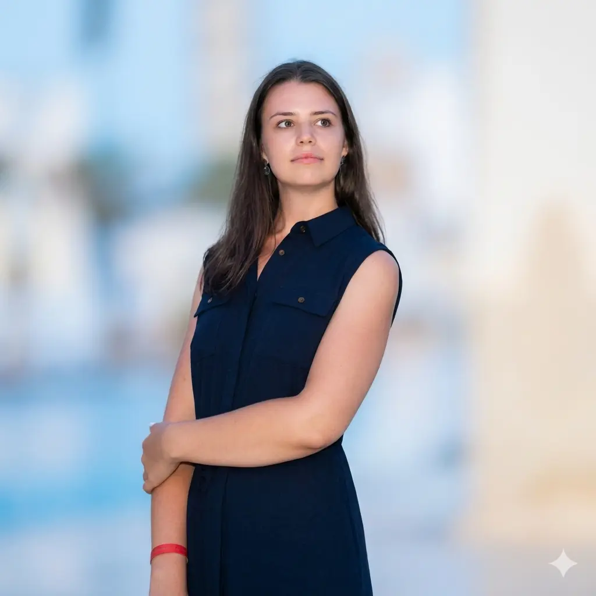
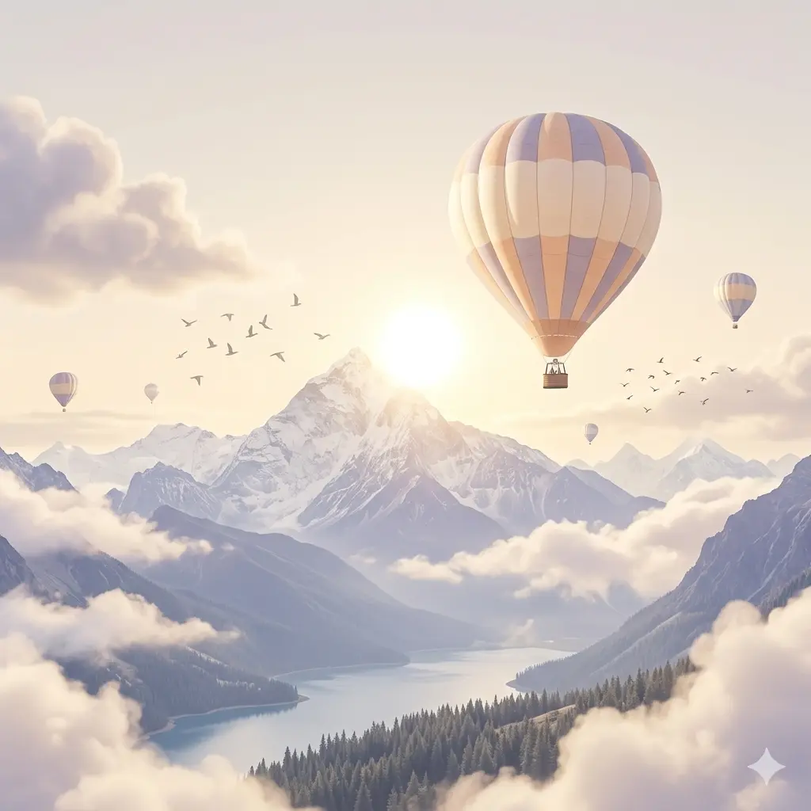
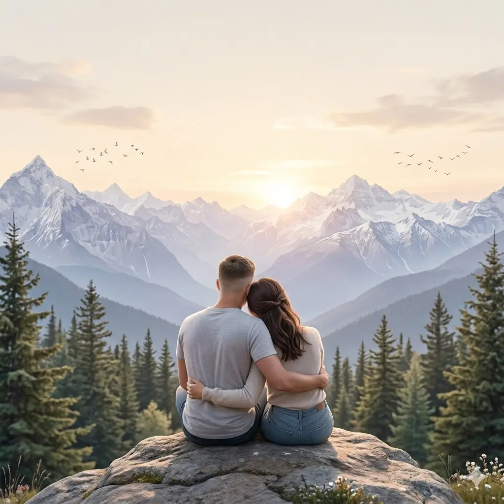
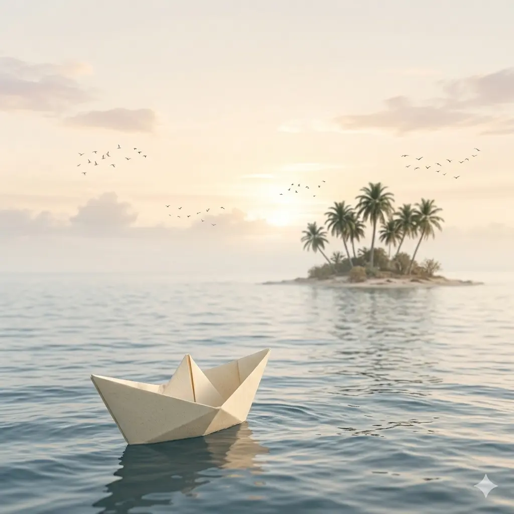
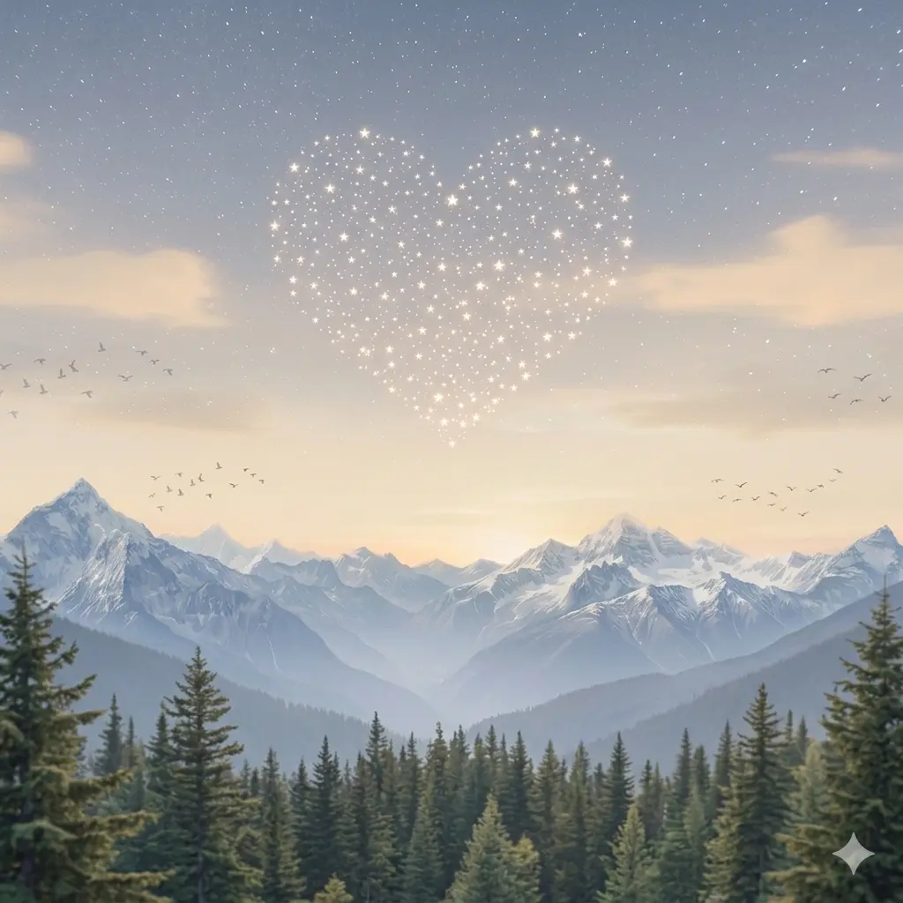

Иногда самые важные путешествия начинаются с одного шага
Я хочу пройти его вместе с тобой
Сегодня я хочу показать тебе кое-что необычное...
Это путешествие о нас!

Иногда даже один человек способен наполнить жизнь теплом и светом.
Кристиночка, ты - именно такой человек!

Милая, ты делаешь меня лучше, помогаешь мечтать и верить в важное!

Рядом с тобой обычные дни становятся особенными. Спасибо, что ты есть у меня!

У нас впереди так много приятных моментов, совместных поездок и путешествий, а также маленьких радостей!

Солнышко моё, я люблю тебя и хочу пройти с тобой еще очень много шагов!